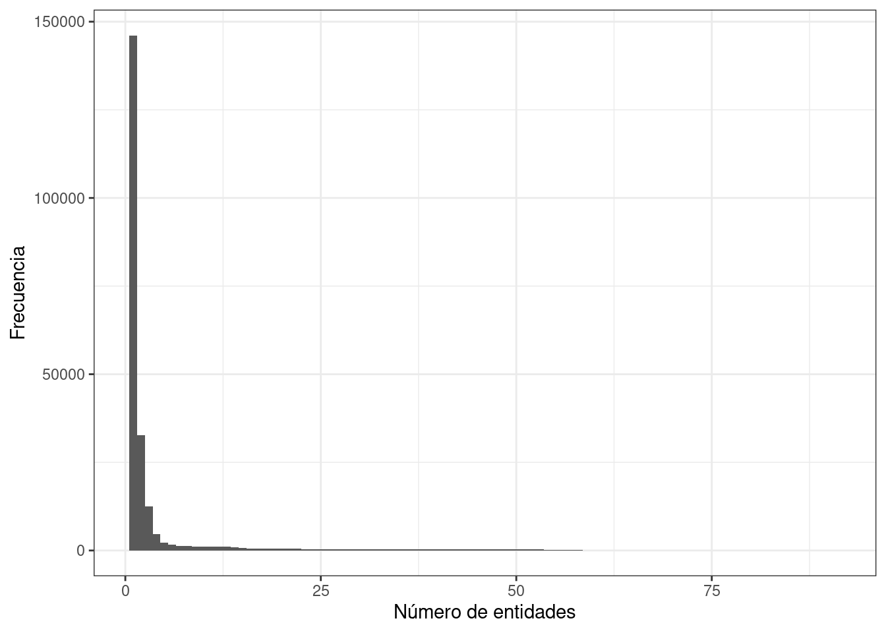
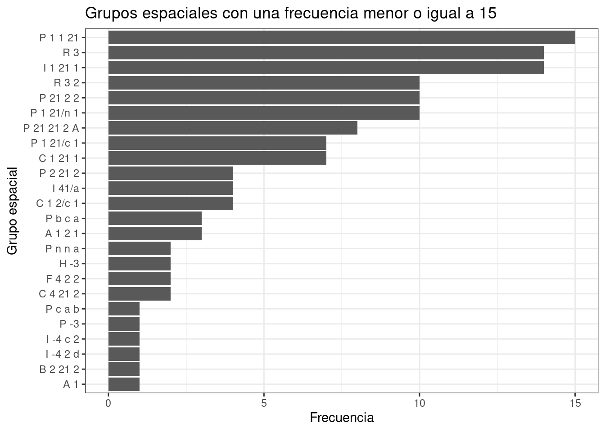

3 Extracción de datos
3.1 Método anterior
En un inicio la extracción de datos se realizaba por medio de la interfaz de programación de aplicaciones (API, por sus siglas en inglés) del banco de datos de proteínas (PDB, por sus siglas en inglés), basado en una ‘búsqueda avanzada’ en formato .xml, como se describe en este post.
3.2 Cambios
A finales del 2019, hubo una serie de cambios al sitio web del PDB que no permitieron seguir con el proceso anterior, al introducir ciertas restricciones. Por lo menos a esta fecha, 30 de mayo 2020, las restricciones continúan y son las siguientes:
- Después de una ‘búsqueda avanzada’, no es posible descargar el archivo
.csvde los resultados de la búsqueda con un número mayor a 2500 líneas.

Restricciones en el PDB
- Después de una ‘búsqueda avanzada’, la opción de descargar un
.csvpersonalizado, es decir, con la posibilidad de seleccionar las columnas de interés, no se encuentra disponible.
Justo estas dos limitantes interfieren con los últimos pasos del primer intento de la extracción de datos.
3.3 Nuevo método
Debido a estas restricciones se decidió emplear la información cruda del PDB, es decir, se decidió obtener la información directamente del cabezal de los archivos de las estructuras depositadas en el PDB.
3.3.1 Escoge formato
El PDB ofrece archivos en tres formatos diferentes, .xml, .pdb y .mmcif. El segundo es el más fácil de leer y manipular; sin embargo, se decidió usar el tercer formato debido a lo siguiente:
Many of the errors have been fixed in the equivalent mmCIF files. Hence, if you are interested in the header information, it is a good idea to extract information from mmCIF files…
De la documentación de
biopython, aquí.
3.3.2 Conoce el formato
El formato .mmcif se detalla en esta página y cabe señalar que existe una correspondencia entre las etiquetas del .pdb con las del .mmcif (véase aquí).
El formato
.mmcif, tiene como fin reemplazar el formato.pdb(información aquí).
Desde abril del 2019, es indispensable depositar la estructura de tu proteína de interés en formato
.mmcif(información aquí).
3.3.3 Descarga la información
Para descargar todo las estructuras del PDB en formato .mmcif, se usa el siguiente comando:
cd /run/media/murphy/lolita/doctorado # Trabaja en el disco duro.
rsync -rlpt -v -z --delete --port=33444 \
rsync.rcsb.org::ftp_data/structures/divided/mmCIF/ ./PDB
# Tarda 725 minutos!Instrucciones tomadas del mismo PDB, aquí.
3.3.4 Organización de la información
Las estructuras están organizadas en diferentes subdirectorios, cuyo nombre está formado por el segundo y el tercer carácter del archivo .mmcif. Por ejemplo 1ABC.mmcif estará en el subdirectorio ab/. Para las pruebas se hace una copia de este directorio, sin los subdirectorios. Esto tiene dos fines: uno, se tiene un backup y dos, es más simple manipular los archivos en un solo directorio.
cd /run/media/murphy/lolita/doctorado
mkdir PDB_backup
cd PDB/
time find . -name '*.gz' -exec cp \{\} /run/media/murphy/lolita/doctorado/PDB_backup/ \; # Hay que dar la ruta absoluta.
# Esto tarda 36 minutos!
# Se confirma con:
#find -name "*.gz" | wc -l
#164391
#cd ../PDB_backup/
#find -name "*.gz" | wc -l
#164391Por otra parte, los archivos están comprimidos en formato gunzip (aquí su documentación) y así se mantendran ya que no es necesario descomprimirlos.
3.3.5 Filtra por método experimental
Del universo de estructuras del PDB, obtenemos aquellas estructuras determinadas por cristalografía de rayos-X. Este filtro ayuda a reducir confusiones posteriores. Estas confusiones surgen porque gemmi, extrae etiquetas pero no conoce contextos. Esto puede resultar, dependiendo de las etiquetas a extraer, en una producción de un archivo de texto con un número de columnas variable por línea, es decir, datos en forma no rectangular.
La mayor parte del
tidyversetrabaja con datos rectangulares, mismo número de columnas en todas las líneas, por lo que es esencial obtener datos de esta forma.
cd /run/media/murphy/lolita/doctorado/PDB_backup
mkdir extract
time gemmi grep _exptl.method PDB_backup/ > ./extract/method.dat # Esto tarda 74 minutos!
time grep X-RAY ./extract/method.dat | awk -F : '{print $1}' | tr '[:upper:]' '[:lower:]' > ./extract/pdbs_by_xray.dat # Esto tarda 0.93 segundos.
# En vim pdbs_by_xray y haz :%s/$/.cif.gz/ y :sav list_pdbs_by_xray y :q
mv list_pdbs_by_xray extract/
cd extract/
# Es interesante comparar el número de entradas por
# X-RAYs contra el total
#wc -l method.dat pdbs_by_xray.dat
# 164558 method.dat
# 146114 pdbs_by_xray.dat
# 88.79 % de las entradas en el PDB son por X-Rays
mkdir xrays
time cat list_pdbs_by_xray | while read line;
do cp ../PDB_backup/$line xrays/; done
# Esto tarda 49 minutos3.3.6 Extrae información
gemmi funciona de la siguiente manera:
# Obtiene número de acceso:
#time gemmi grep _struct_ref.pdbx_db_accession xrays/ > from_xrays_get_accession_code
# Esto tarda 83 minutos!
# Obtiene número de entidades:
#time gemmi grep _struct_ref.entity_id xrays/ > from_xrays_get_number_of_entities
# Esto tarda 73 minutos!
#time gemmi grep _entity_poly.entity_id -a _entity_poly.type -a _struct_ref.pdbx_db_accession xrays/ > from_xrays_get_ne_te_ac
# Esto tarda 75 minutos!
# Si bien esto funciona, los resultados generados no producen
# datos rectangulares, por la falta de un delimitador apropiado.# El primer delimitador a probar fue TAB (\t)
#time gemmi grep --delimiter='\t' _entity_poly.entity_id -a _entity_poly.type -a _struct_ref.pdbx_db_accession -a _entity.pdbx_description -a _exptl_crystal_grow.method -a _exptl_crystal_grow.pH -a _exptl_crystal_grow.pdbx_details -a _reflns.d_resolution_high -a _reflns_shell.d_res_high -a _symmetry.space_group_name_H-M -a _citation.pdbx_database_id_DOI xrays/ > todo
# Esto tarda 45 minutos!
# Sin embargo, el campo donde se anotan las condiciones
# experimentales de la cristalización, contienen
# este delimitador. La limpieza de datos no es fácil:
#awk 'BEGIN{FS="\t";}{if(NF>12) print $0;}' todo > errores
#cat errores # Para ver las líneas mal formateadas.
# En vim %s/\\^I/ /g
#awk 'BEGIN{FS="\t";}{if(NF!=12) print $0;}' todo_fix.tsv # Confirma
# Desafortunadamente, esto todavía no es suficiente.
# ¿Por qué? No sé. Debe haber caracteres raros en los datos.
# Probé con un delimitador que jamás podría estar
# en los archivos `mmcif`, '¿'...
# (básicamente por que no existe en inglés).
cd /run/media/murphy/lolita/doctorado/extract
time gemmi grep --delimiter='¿' _entity_poly.entity_id -a _entity_poly.type -a _struct_ref.pdbx_db_accession -a _entity.pdbx_description -a _exptl_crystal_grow.method -a _exptl_crystal_grow.pH -a _exptl_crystal_grow.pdbx_details -a _reflns.d_resolution_high -a _reflns_shell.d_res_high -a _symmetry.space_group_name_H-M -a _citation.pdbx_database_id_DOI xrays/ > todo2
# Esto tarda 45 minutos!library(readr)
todo2 <- read_delim("/run/media/murphy/lolita/doctorado/extract/todo2",
"¿", escape_double = FALSE, col_names = FALSE,
comment = "*>", trim_ws = TRUE)
library(stringr)
# El locale de mi sistema, por lo tanto el de `R` está
# en inglés, por lo que `R` no reconoce el delimitador usado.
pdb<-todo2$X1
nde<-stringr::str_replace(todo2$X2, '�', '')
tde<-stringr::str_replace(todo2$X3, '�', '')
ide<-stringr::str_replace(todo2$X4, '�', '')
nom<-stringr::str_replace(todo2$X5, '�', '')
tec<-stringr::str_replace(todo2$X6, '�', '')
peh<-stringr::str_replace(todo2$X7, '�', '')
con<-stringr::str_replace(todo2$X8, '�', '')
rs1<-stringr::str_replace(todo2$X9, '�', '')
rs2<-stringr::str_replace(todo2$X10, '�', '')
gpo<-stringr::str_replace(todo2$X11, '�', '')
doi<-stringr::str_replace(todo2$X12, '�', '')
# !!! Ayer no sabía cómo hacer esto en `R`, así que pedí ayuda y mi papá hizo un macro en excel escrito en `VB`, Haly hizo un programa en `perl` y hoy lo resolví con `python` (y después con `R`). Esto se encuentra documentado en los subdirectorios `ema/`, `mcr/` y `fmp/`, respectivamente.
datos<-data.frame(pdb, nde, tde, ide, nom, tec, peh, con, rs1, rs2, gpo, doi)
rm(pdb, nde, tde, ide, nom, tec, peh, con, rs1, rs2, gpo, doi)
# Cuando `R` crea el data.frame, escribe todo como factor
# El número de entidades, el pH y la resolución
# debe tratarse como número
datos$nde<-as.numeric(as.character((datos$nde)))
datos$peh<-as.numeric(as.character((datos$peh)))
datos$rs1<-as.numeric(as.character((datos$rs1)))
datos$rs2<-as.numeric(as.character((datos$rs2)))
# Verificamos los datos al graficar algunas variables:
library(ggplot2)
library(RColorBrewer)
theme_set(theme_bw())
ggplot(data = datos, aes(x=peh)) + geom_histogram(binwidth = 0.5) + labs(x="pH", y="Frecuencia") + xlim(1, 11) 


# Es lo mismo? Sí. La única diferencia es
# que las barras están separadas
#ggplot(data = datos, aes(x=nde)) + geom_bar() + labs(x="Número de entidades", y="Frecuencia")
library(dplyr)
df1<-datos %>%
add_count(gpo, name = "cta_gpo")
df2<-df1 %>%
add_count(tde, name = "cta_tde")
df3<-datos %>%
count(gpo, name = "cta_gpo") %>%
arrange(desc(cta_gpo))
df4<-datos %>%
count(tde, name = "cta_tde") %>%
arrange(desc(cta_tde))
ggplot(data = df1, aes(x=reorder(gpo, cta_gpo))) + geom_bar() + labs(x="Grupo espacial", y="Frecuencia") + theme(axis.text.x = element_text(angle = 90))gpo_rar <- df1 %>%
filter(cta_gpo <= 15)
ggplot(data = gpo_rar, aes(x=reorder(gpo, cta_gpo))) + geom_bar() + labs(x="Grupo espacial", y="Frecuencia", title = "Grupos espaciales con una frecuencia menor o igual a 15") + coord_flip()#+ theme(axis.text.x = element_text(size = 12, angle = 45)) 
# Una tabla
library(knitr)
library(kableExtra)
tabla_gpos<-head(df3, n=100)
kable(tabla_gpos) %>%
kable_styling(bootstrap_options = c("striped", "hover", "condensed", "responsive"), full_width=F)| gpo | cta_gpo |
|---|---|
| P 21 21 21 | 58553 |
| P 1 21 1 | 40925 |
| C 1 2 1 | 21183 |
| C 2 2 21 | 12353 |
| P 21 21 2 | 9612 |
| P 41 21 2 | 8377 |
| P 1 | 8087 |
| P 43 21 2 | 6933 |
| P 31 2 1 | 5678 |
| P 32 2 1 | 5497 |
| I 2 2 2 | 4805 |
| P 61 2 2 | 3107 |
| P 65 2 2 | 2964 |
| H 3 2 | 2778 |
| H 3 | 2510 |
| P 61 | 2319 |
| P 65 | 2040 |
| I 4 2 2 | 1738 |
| P 63 | 1474 |
| P 41 | 1246 |
| P 2 21 21 | 1168 |
| P 32 | 1153 |
| P 31 | 1146 |
| P 43 | 1125 |
| I 41 2 2 | 1088 |
| P 42 21 2 | 1046 |
| P 63 2 2 | 1010 |
| I 4 | 987 |
| P 21 3 | 948 |
| I 2 3 | 797 |
| P 3 2 1 | 734 |
| P 4 21 2 | 626 |
| P 62 2 2 | 591 |
| P 41 2 2 | 584 |
| I 21 3 | 561 |
| P 64 2 2 | 524 |
| I 1 2 1 | 514 |
| P 43 2 2 | 505 |
| I 41 | 484 |
| I 21 21 21 | 466 |
| P 21 2 21 | 465 |
| C 2 2 2 | 450 |
| P 1 2 1 | 437 |
| P 64 | 398 |
| P 6 | 388 |
| P 62 | 363 |
| F 4 3 2 | 322 |
| P 3 | 316 |
| P 41 3 2 | 293 |
| P 2 2 21 | 275 |
| F 2 2 2 | 272 |
| P 32 1 2 | 233 |
| P 31 1 2 | 214 |
| I 4 3 2 | 183 |
| F 2 3 | 175 |
| P 6 2 2 | 166 |
| P 43 3 2 | 163 |
| P 4 | 158 |
| P 42 | 153 |
| I 41 3 2 | 128 |
| P 42 2 2 | 119 |
| P 2 3 | 116 |
| F 41 3 2 | 102 |
| P 4 3 2 | 92 |
| P 4 2 2 | 76 |
| P 42 3 2 | 69 |
| P -1 | 44 |
| B 1 1 2 | 36 |
| P 3 1 2 | 35 |
| P 2 2 2 | 16 |
| P 1 1 21 | 15 |
| I 1 21 1 | 14 |
| R 3 | 14 |
| P 1 21/n 1 | 10 |
| P 21 2 2 | 10 |
| R 3 2 | 10 |
| P 21 21 2 A | 8 |
| C 1 21 1 | 7 |
| P 1 21/c 1 | 7 |
| C 1 2/c 1 | 4 |
| I 41/a | 4 |
| P 2 21 2 | 4 |
| A 1 2 1 | 3 |
| P b c a | 3 |
| C 4 21 2 | 2 |
| F 4 2 2 | 2 |
| H -3 | 2 |
| P n n a | 2 |
| A 1 | 1 |
| B 2 21 2 | 1 |
| I -4 2 d | 1 |
| I -4 c 2 | 1 |
| P -3 | 1 |
| P c a b | 1 |
# Otra tabla
library(knitr)
library(kableExtra)
tabla_tdes<-head(df4, n=10)
kable(tabla_tdes) %>%
kable_styling(bootstrap_options = c("striped", "hover", "condensed", "responsive"), full_width=F)| tde | cta_tde |
|---|---|
| polypeptide(L) | 208248 |
| polydeoxyribonucleotide | 10845 |
| polyribonucleotide | 5268 |
| polydeoxyribonucleotide/polyribonucleotide hybrid | 171 |
| polypeptide(D) | 83 |
| peptide nucleic acid | 3 |
| other | 2 |